Майонез
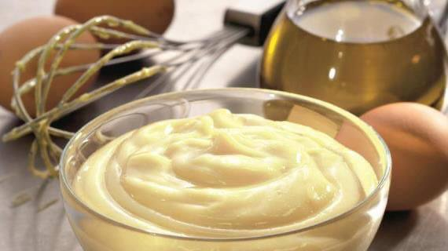Сырный соус
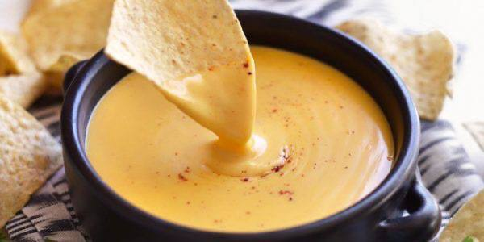Башамель
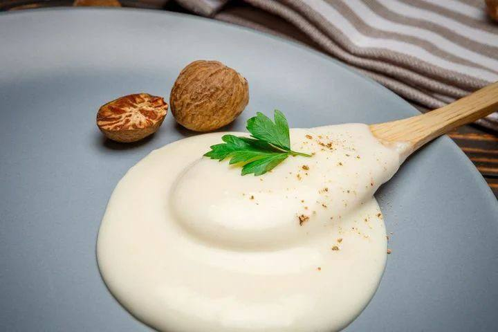Соус песто
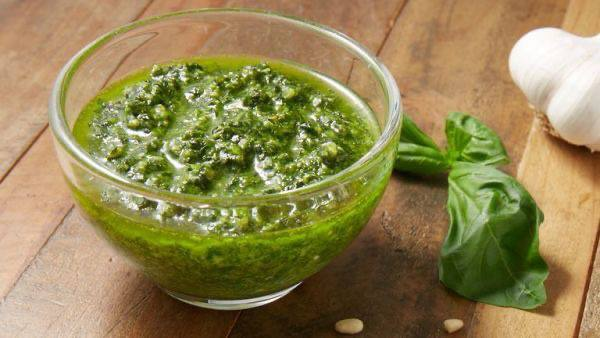Клюквенный соус
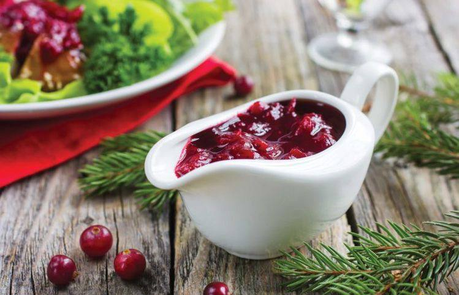Голландез
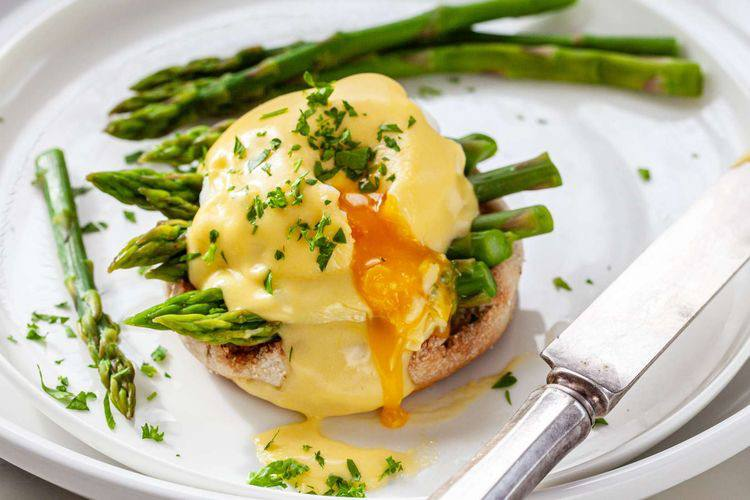Гуакамоле
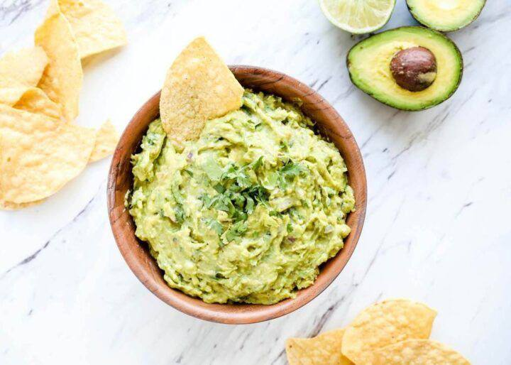Мятный соус
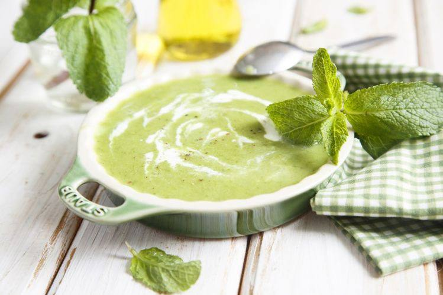Медовый терияки
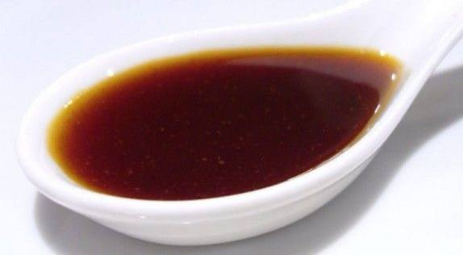Грибной соус
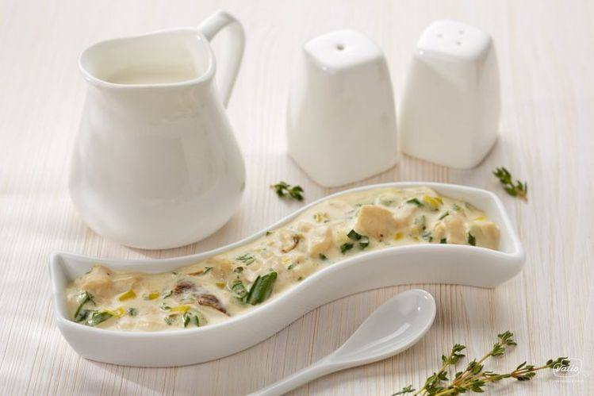Ингредиенты к рецепту:
яйца – 2 шт.
лимонный сок – 1 ч. л.
растительное масло – 280 мл
соль – 1 ч. л.
молотый черный перец – 1/2 ч. л.
Приготовление блюда по рецепту:
Шаг 1. Подготовьте ингредиенты домашнего майонеза. Достаньте яйца из холодильника и оставьте их на 30 минут на рабочем столе. Так же поступите с растительным маслом, если вдруг вы храните его не при комнатной температуре.
Шаг 2. Отмерьте необходимое количество лимонного сока, соли и перца для майонеза. Яйца осторожно вымойте, чтобы грязь со скорлупы не попала в соус. Выпустите их в чашу или стакан блендера.
Шаг 3. Добавьте соль, перец и лимонный сок. Включите блендер и смешивайте ингредиенты майонеза на низкой скорости. Через пару минут начинайте постепенно вливать растительное масло.
Шаг 4. Когда добавите примерно половину масла, скорость взбивания увеличьте. Вливайте масло и далее. Работайте блендером до тех пор, пока в чаше или стакане не образуется масса однородной консистенции.
Шаг 5. Попробуйте приготовленный домашний майонез и, если потребуется, немного посолите и поперчите. Переложите приготовленный майонез в чистую банку и уберите в холодильник (можно хранить не более 5 дней).
Ингредиенты к рецепту:
50 г сливочного масла
100 г сыра горгонзолы или любого другого сыра с голубой плесенью
200-220 г густого натурального йогурта
молотый мускатный орех на кончике ножа
Приготовление блюда по рецепту:
Шаг 1. Сливочное масло размягчить при комнатной температуре.
Шаг 2. Сыр горгонзола протереть через мелкое сито.
Шаг 3. Хорошо перемешать или взбить миксером масло, горгонзолу и йогурт. Приправить мускатным орехом. Подавать к овощам, поджаренному хлебу и крекерам.
Ингредиенты к рецепту:
30 г сливочного масла
2 ст. л. муки
600 мл молока
cоль, мускатный орех,, белый перец молотый по вкусу
Приготовление блюда по рецепту:
Шаг 1. Сливочное масло растопить в большой кастрюле на медленном огне, добавить муку, хорошо перемешать до получения однородной массы, и, продолжая помешивать, готовить около 2-3 минут. Чтобы соус имел приятный кремовый цвет, мука должна только слегка обжариться.
Шаг 2. Помешивая, медленно влить молоко, дать вскипеть, уменьшить огонь и варить до густоты (около получаса).
Шаг 3. В конце приправить солью, перцем, мускатным орехом.
Шаг 4. Готовый соус процедить.
Ингредиенты к рецепту:
100 мл оливкового масла
пучок зеленого базилика
2 зубчика чеснока
50 г пармезана
50 г кедровых орехов
сок половины лимона
Приготовление блюда по рецепту:
Шаг 1. Базилик вымыть, обсушить и мелко нарезать, чеснок измельчить, сыр натереть на мелкой терке.
Шаг 2. Все ингредиенты переложить в ступку и, медленно добавляя оливковое масло (можно заменить на растительное масло), хорошо перетереть до образования однородной пасты.
Шаг 3. В самом конце добавить лимонный сок, перемешать.
Ингредиенты к рецепту:
500 г свежей клюквы
1 л воды
100 мл красного вина
10 г крахмала
200 г сахара
корица по вкусу
Приготовление блюда по рецепту:
Шаг 1. Клюкву залить водой, дать некоторое время настояться, затем настой слить в отдельную кастрюльку.
Шаг 2. Ягоды протереть через сито или измельчить в блендере до однородной консистенции, добавить сахар, корицу, вино, небольшое количество настоя и варить 5 минут.
Шаг 3. Крахмал развести в оставшемся настое, влить в соус, дать вскипеть и снять с огня.
Ингредиенты к рецепту:
100 г сливочного масла
3 яичных желтка
сок половины лимона
белый перец, соль и щепотка кайенского перца по вкусу
Приготовление блюда по рецепту:
Шаг 1. Масло растопить на сковороде и охладить до комнатной температуры.
Шаг 2. Яичные желтки переложить в отдельную посуду и поместить на водяную баню, добавить лимонный сок и аккуратно взбивать миксером, пока масса не станет пышной.
Шаг 3. Продолжать взбивать, постепенно вливая тонкой струйкой охлажденное растопленное масло.
Шаг 4. Когда соус загустеет, добавить соль и перец по вкусу и взбивать еще около 30 секунд. Подавать сразу после приготовления.
Ингредиенты к рецепту:
2 авокадо
1 помидор
1 острый красный перец
2 ст. л. лимонного сока (или сока лайма)
1 ст. л. мелко нарезанной кинзы
1/2 ч. л. морской соли с травами
1/2 луковицы
Приготовление блюда по рецепту:
Шаг 1. Авокадо очистить, вынуть косточку, мякоть размять вилкой, добавить лимонный сок (масса не должна потемнеть).
Шаг 2. Лук и помидор нарезать, из острого перца вынуть семена, перец мелко нарезать.
Шаг 3. В авокадо добавить кинзу, лук, острый перец и помидоры, приправить солью и перемешать.
Ингредиенты к рецепту:
мята 1 веточка
авокадо 1 штука
петрушка 1 веточка
щавель щепотка
кунжут 2 столовые ложки
соль 1 чайная ложка
яблочный уксус 11/2столовой ложки
рафинированное оливковое масло 6 столовых ложек
Приготовление блюда по рецепту:
Шаг 1. Отправить кунжут и зелень в блендер.
Шаг 2. Отмерить нужное количество масла и уксуса.
Шаг 3. Добавить жидкости в блендер.
Шаг 4. Нарезать мякоть авокадо.
Шаг 5. Отправить нарезанный авокадо в блендер и взбить до консистенции сметаны.
Шаг 6. Посолить получившийся соус и снова взбить.
Ингредиенты к рецепту:
соевый соус 100 мл
вода 100 мл
апельсиновый сок 60 мл
мёд 40 г
чеснок 10 г
имбирь 15 г
тростниковый сахар 30 г
кукурузный крахмал 5 г
Приготовление блюда по рецепту:
Шаг 1. Соединить соевый соус, воду, свежевыжатый апельсиновый сок, сахар, крахмал и мед. Нагреть до полного растворения меда и крахмала, перемешать.
Шаг 2. Добавить мелко порубленный имбирь и чеснок. Присолить, поперчить и варить, пока соус по консистенции не будет напоминать густую сметану.
Ингредиенты к рецепту:
шампиньоны 150 г
обезжиренное молоко ½ стакана
молотый черный перец по вкусу
Приготовление блюда по рецепту:
Шаг 1. Поджарь шампиньоны до тёмного цвета.
Шаг 2. Добавь молоко, перец.
Шаг 3. Готовь 5-8 минут, помешивая.
Yummy day
рецепты для всей семьи
Майонез
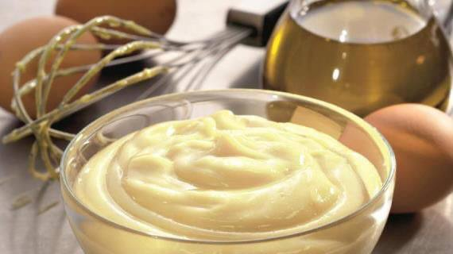Сырный соус
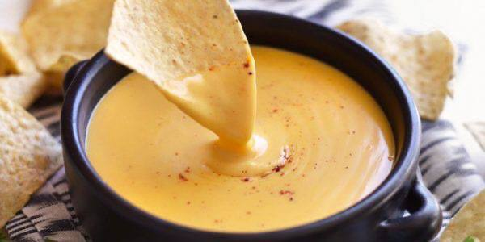Башамель
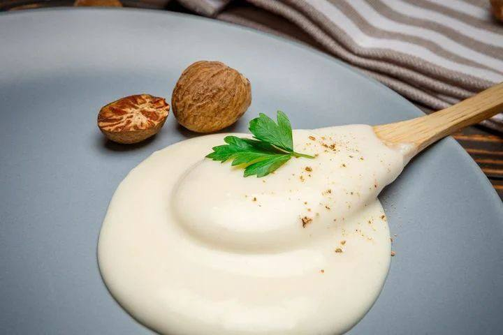Соус песто
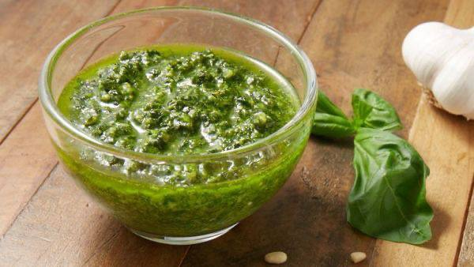Клюквенный соус
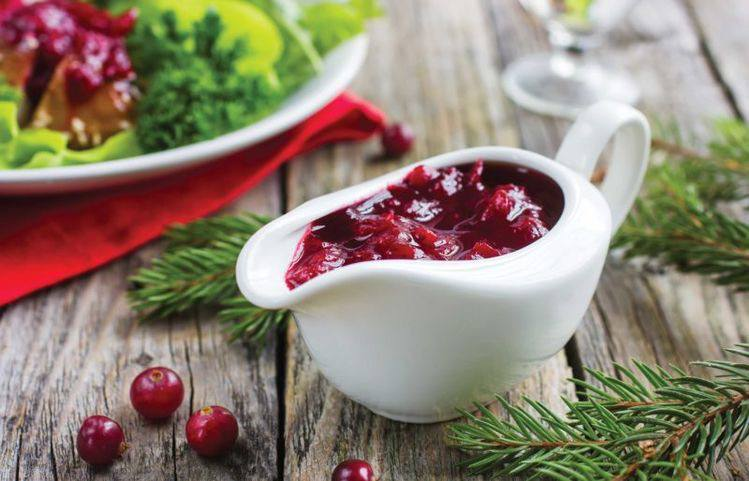Голландез
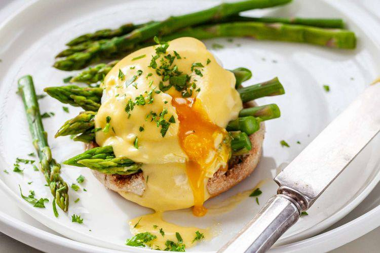Гуакамоле
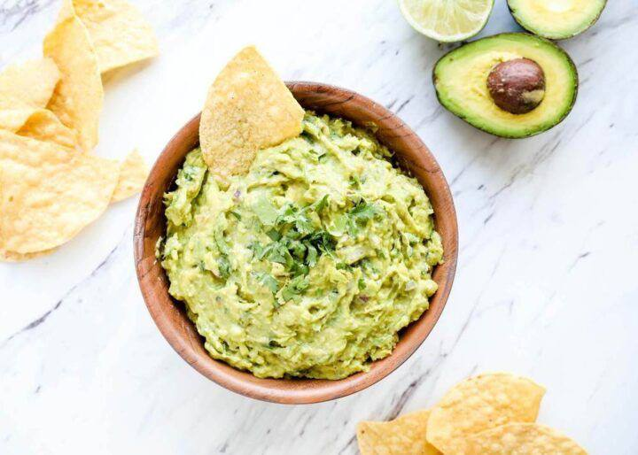Мятный соус
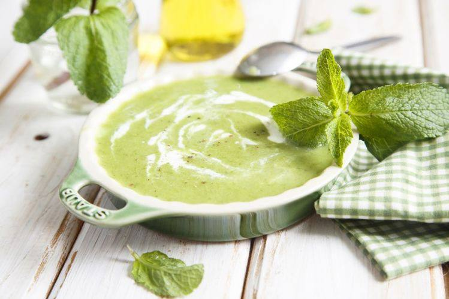Медовый терияки
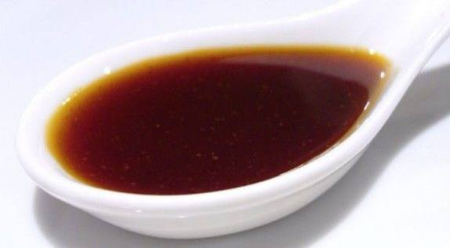Грибной соус
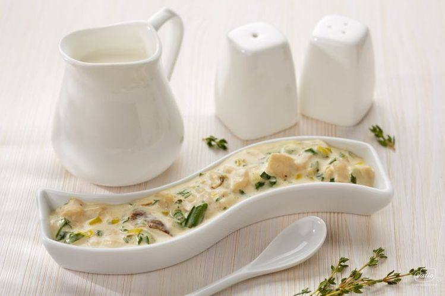P.S. With love to you